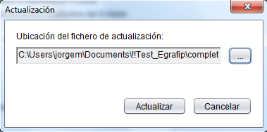
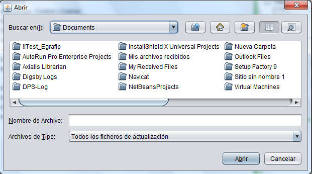

Ventana "Actualizar"
En esta ventana es donde se importa el fichero de actualización, ya sea actualización completa o compacta, que contiene los datos con los que la aplicación actualizará el sistema para su correcto funcionamiento. Primeramente es necesario declarar la dirección donde se encuentra el fichero de actualización. Esto se realiza dando clic en el botón de búsqueda, el cual muestra una ventana que brinda la posibilidad de especificar la dirección deseada. A continuación se debe dar clic en el botón Actualizar para completar la importación de la actualización y modificar los datos de la aplicación.

Ventana "Abrir"
Esta es la ventana que permite seleccionar la ubicación del fichero de actualización. Se puede especificar el tipo de fichero que desea seleccionar, lo cual dependerá del tipo de actualización que esté realizando. Los ficheros con extensión ".mod" corresponden con actualizaciones compactas, las cuales incluyen las últimas modificaciones realizadas en la legislación vigente. Los ficheros con extensión ".all" corresponden con actualizaciones completas, con las cuales se importan nuevamente todos los datos hacia la aplicación.
